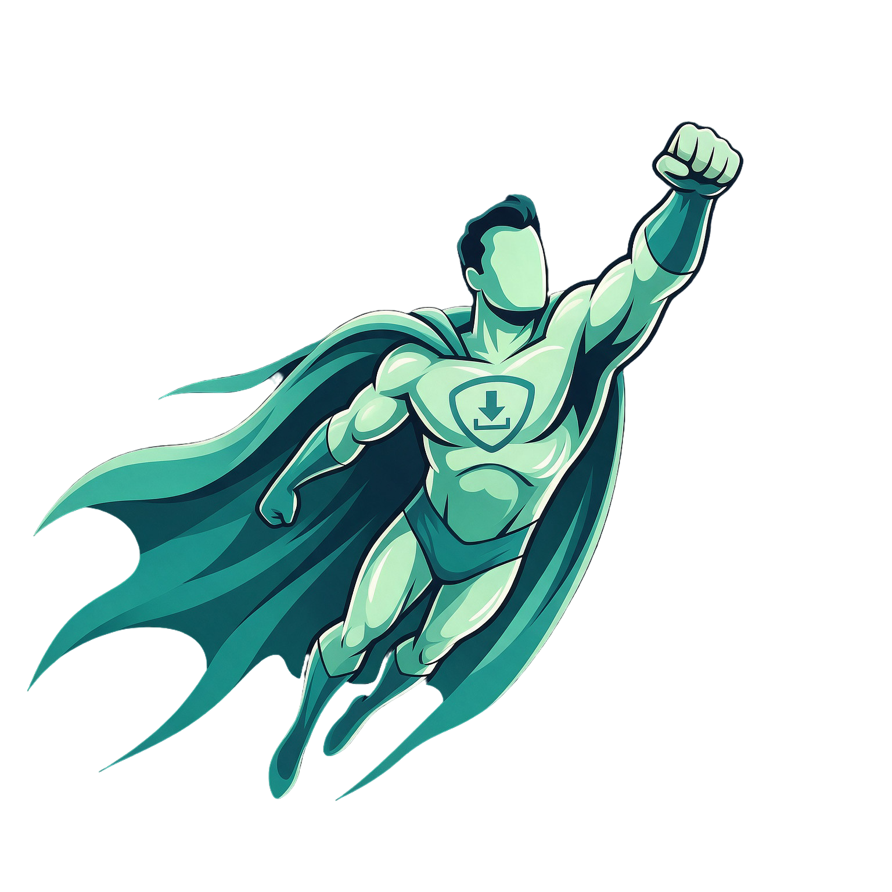

Files will be saved inside this folder

⚠️ Hi! Before You Start the Backup
Chrome may ask "Where do you want to save this file?" for every single download, which could result in hundreds of confirmation dialogs.
To avoid this, please temporarily turn off Chrome's "Ask where to save each file before downloading" setting. This will allow all files to download automatically into your Downloads/Kartra Backup/ folder without requiring confirmation for each file.
Once the backup is complete, you can turn this setting back on.
You can re-enable the setting in Chrome after the backup finishes.
⏱ Google Drive uploads are slower than local — each file is streamed through the extension one at a time.
Each file is fetched and streamed to Drive one at a time through the extension. Large courses may take a while.
It looks like a backup was in progress. Would you like to pick up where you left off?